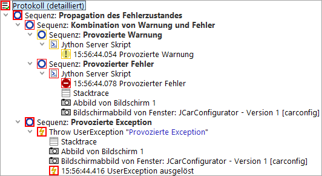
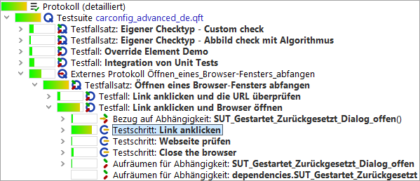

| Version 6.0.3 |
Da der eigentliche Zweck der Testautomatisierung darin besteht, Probleme im SUT aufzudecken, ist davon auszugehen dass Tests hin und wieder fehlschlagen.
Nachdem ein Testlauf beendet ist, erscheint in der Statuszeile des Hauptfensters von QF-Test eine Meldung mit dem Ergebnis. Im Idealfall lautet diese "Keine Fehler". Sind Probleme aufgetreten, wird die Zahl der Warnungen, Fehler und Exceptions angezeigt und gegebenenfalls zusätzlich ein Dialogfenster geöffnet. In diesem Fall ist es Ihre Aufgabe herauszufinden, was schiefgelaufen ist.
Manchmal ist die Ursache eines Problems offensichtlich, in den meisten Fällen jedoch nicht. Am wichtigsten ist es in so einem Fall zu klären, ob der Test auf Grund eines Fehlers im SUT fehlgeschlagen ist, oder ob sich das SUT korrekt verhalten hat aber die Testlogik einen Fehler aufweist. Das Dilemma besteht darin, dass ein mögliches Problem im SUT nicht übersehen werden darf und so früh wie möglich gemeldet werden sollte. Andererseits verschwendet ein unberechtigter Fehlerreport Zeit und zieht eventuell den Unmut der Entwicklungsabteilung nach sich. Daher muss jedes Problem genau analysiert werden und jeder vermutete Bug im SUT sollte idealerweise reproduzierbar sein bevor er gemeldet wird.
Bei dieser wichtigen Aufgabe bietet QF-Test in zweierlei Hinsicht Unterstützung. Für jeden Testlauf wird ein detailliertes Protokoll erstellt, welches alle relevanten Informationen für eine Post-mortem Analyse enthält, inklusive Bildschirmfotos von dem Zeitpunkt, an dem ein Fehler aufgetreten ist. Der integrierte Test Debugger unterstützt Sie dagegen bei der Analyse des Kontroll- und Informationsflusses zur Laufzeit eines Tests.
 Das Video 'Fehleranalyse'
zeigt ein kurzes Beispiel zur Vorgehensweise bei der Fehleranalyse.
Das Video 'Fehleranalyse'
zeigt ein kurzes Beispiel zur Vorgehensweise bei der Fehleranalyse.
Beim Abspielen eines Tests erstellt QF-Test ein Protokoll, in dem jede einzelne Aktion notiert
wird. Die Protokolle der zuletzt ausgeführten Tests sind über das »Wiedergabe« Menü zugänglich. Das aktuelle Protokoll kann auch mittels
[Strg-L] oder dem entsprechenden  Button
im Toolbar geöffnet werden. Abschnitt 7.1.6 gibt eine Übersicht über Optionen, die die Erstellung von
Protokollen beeinflussen.
Button
im Toolbar geöffnet werden. Abschnitt 7.1.6 gibt eine Übersicht über Optionen, die die Erstellung von
Protokollen beeinflussen.
Die Struktur dieses Protokolls ist der einer Testsuite sehr ähnlich, mit einem Unterschied: Knoten werden bei ihrer Ausführung in das Protokoll aufgenommen. Wird ein Knoten mehrfach ausgeführt, was z.B. bei 'Vorbereitung' und 'Aufräumen' Knoten häufig der Fall ist, taucht er auch mehrfach im Protokoll auf. Folgende Abbildung zeigt eine typische Situation:
|
|
|
||||||
|
| Abbildung 7.1: Ein einfacher Test und sein Protokoll | ||||||
Das Protokoll ist das entscheidende Hilfsmittel, wenn es herauszufinden gilt, was bei einem Testlauf fehlgeschlagen ist, wo es passiert ist und - im besten Fall - auch warum es passiert ist. Daher liegt das Gewicht bei einem Protokoll bei der Vollständigkeit der Information. Darunter leidet natürlich die Lesbarkeit und die Übersicht. Beides ist Aufgabe von Reports, deren Erstellung in Kapitel 21 beschrieben wird.
Neben den Knoten, die aus der Testsuite übernommen wurden, enthält ein Protokoll insbesondere Fehlerinformationen, optionale Anmerkungen, verschiedene Arten von Meldungen sowie Informationen über Variablenexpansion und das Laufzeitverhalten.
Da die gesammelten Informationen über einen längeren Testlauf gewaltige Mengen an Arbeitsspeicher verbrauchen
können, verfügt QF-Test über mehrere Möglichkeiten, damit umzugehen. Die beste davon, gleichzeitig die
Standardeinstellung, sind geteilte Protokolle. Diese werden in Abschnitt 7.1.5 näher
erläutert. Die dabei entstehenden *.qzp Dateien im ZIP Format reduzieren nicht nur den Platz auf
der Festplatte. Teil der Protokolle können bereits bei der Ausführung ausgelagert und der dafür benötigte
Arbeitsspeicher wieder freigegeben werden. Gleiches gilt bei der Verarbeitung von Protokollen, z.B. zur
Erstellung von Reports. Die ältere Option Kompakte Protokolle erstellen sowie die alternativen Dateiformate
*.qrz und *.qrl bieten zusätzliche Flexibilität, werden aber primär aus
Kompatibilitätsgründen erhalten.
Es gibt drei Arten von Fehlerzuständen, die sich in ihrer Schwere unterscheiden:
ComponentNotFoundException geworfen, wenn im SUT keine
passende Komponente für einen Event gefunden wurde. Eine Liste
aller möglichen Exceptions finden Sie in Kapitel 39.
Jeder Knoten eines Protokolls hat einen von vier Fehlerzuständen: Normal, Warnung, Fehler oder Exception. Dieser Zustand wird durch einen Rahmen um das Icon des Knotens dargestellt, dessen Farbe Orange für Warnung, rot für Fehler und fett rot für Exception ist.
|
|  | ||
|
| Abbildung 7.2: Fehlerzustände im Protokoll | ||
Der Ausschnitt aus einem Protokoll in obiger Abbildung illustriert, wie Fehlerzustände von unten nach oben propagieren. Der Exception Zustand hat mehr Gewicht als der Fehler Zustand, der wiederum die Warnung überdeckt. Die schwerste Art von Fehler, die bis ganz nach oben im Baum propagiert, bestimmt das Endergebnis des Testlaufs und damit auch den Rückgabewert von QF-Test, wenn es im Batchmodus gestartet wurde (vgl. Abschnitt 40.3).
Wenn nötig kann die Propagation von Fehlern auch (auf 'Sequenz' Ebene) begrenzt werden, z.B. für einen bereits bekannten Fehler, der keinen Einfluss auf das Gesamtresultat haben soll. Diese Einschränkung geschieht für alle Arten von 'Sequenz' Knoten mit Hilfe des Attributs 'Maximaler Fehler'. Exceptions können mit Hilfe der 'Try' und 'Catch' Knoten abgefangen werden. Das Attribut 'Maximaler Fehler' des 'Catch' Knotens legt dabei fest, welche Art von Fehlerzustand an Stelle der Exception treten soll.
Die grundlegenden Bearbeitungsmöglichkeiten im Protokoll sind analog zur Testsuite, mit dem Unterschied, dass die Attribute der Knoten, die aus der Testsuite übernommen wurden, nicht geändert und dass keine Knoten entfernt oder eingefügt werden können. Knoten können aber mit einer Bemerkung versehen werden, z.B. um den Grund für einen Fehler zu dokumentieren.
Die erste Frage beim Blick auf ein Protokoll ist üblicherweise: "Was ist passiert?"
Der  Button, bzw. die Funktion
»Bearbeiten«-»Nächsten Fehler finden«, kurz [Strg-N],
bewegt die Selektion an die nächste Stelle, an der ein Problem
tatsächlich aufgetreten ist.
Button, bzw. die Funktion
»Bearbeiten«-»Nächsten Fehler finden«, kurz [Strg-N],
bewegt die Selektion an die nächste Stelle, an der ein Problem
tatsächlich aufgetreten ist.
Analog sucht  bzw. »Bearbeiten«-»Vorherigen Fehler finden« ([Strg-P]) rückwärts.
bzw. »Bearbeiten«-»Vorherigen Fehler finden« ([Strg-P]) rückwärts.
Die Option Unterdrückte Fehler überspringen legt fest ob nach Fehlern gesucht werden soll, die nicht bis nach oben propagiert wurden. Der Menüeintrag »Bearbeiten«-»Unterdrückte Fehler überspringen« ist eine Abkürzung zum schnellen Umschalten der letzteren Option.
Die nächste Frage könnte lauten: "Wo ist das passiert?"
Obwohl ein Protokoll einer Testsuite in vieler Hinsicht ähnlich ist, ist der Zusammenhang nicht immer offensichtlich, vor allem, wenn Aufrufe tief verschachtelt sind. Die Funktion »Bearbeiten«-»Knoten in Testsuite finden« ([Strg-T]) bringt Sie exakt zu dem Knoten in der Testsuite, der dem selektierten Knoten im Protokoll entspricht. Voraussetzung hierfür ist, dass die Testsuite auffindbar ist und nicht in einer Form geändert wurde, die das verhindert. Wenn das Protokoll aus einer Datei geladen wurde, befindet sich die Testsuite eventuell nicht an der selben Stelle wie bei der Ausführung des Tests. Kann die Suite nicht lokalisiert werden, öffnet sich ein Dialog, in dem Sie selbst eine Datei für die Testsuite auswählen können. Wenn Sie dabei die falsche Testsuite angeben oder wenn automatisch eine falsche Version der Testsuite gefunden wurde, kann es sein, dass Sie bei einem völlig anderen Knoten landen. In diesem Fall können Sie mittels »Bearbeiten«-»Zugehörige Testsuite lokalisieren« explizit eine andere Testsuite auswählen.
Diese Zuordnung können Sie über die Protokolloptionen auch voreinstellen (siehe Verweise zwischen Verzeichnissen mit Testsuiten).
QF-Test protokolliert für jede Ausführung eines Knotens die Startzeit und zwei Formen der Laufzeit: 'Echtzeit' ist die tatsächlich zwischen Betreten und Verlassen des Knotens vergangene Zeit. Sie beinhaltet explizite Verzögerungen durch das Attribut 'Verzögerung vorher/nachher', Unterbrechungen durch den Benutzer beim Debuggen von Tests oder anderen Overhead, wie die Aufnahme von Bildschirmabbildern. Die tatsächlich für Tests aufgewendete Zeit, die im Attribut 'Dauer' aufsummiert wird, ist daher ein besserer Indikator für die Performance des SUT.
Für ein besseres Verständnis des Laufzeitverhaltens eines Tests kann die Anzeige der relativen Dauer über
den Toolbar Button  , das Menü »Ansicht«-»Anzeige für relative Dauer einblenden« oder die Option Relative Dauer anzeigen aktiviert werden.
Für jeden Knoten werden farbige Balken dargestellt, deren Länge sich nach dem prozentualen Anteil der Zeit
richtet, die für diesen Knoten relativ zur Zeit seines Parent-Knotens aufgewendet wurde. Damit lassen sich
Performance-Engpässe leicht auffinden, indem man jeweils die Knoten mit den längsten Balken betritt:
, das Menü »Ansicht«-»Anzeige für relative Dauer einblenden« oder die Option Relative Dauer anzeigen aktiviert werden.
Für jeden Knoten werden farbige Balken dargestellt, deren Länge sich nach dem prozentualen Anteil der Zeit
richtet, die für diesen Knoten relativ zur Zeit seines Parent-Knotens aufgewendet wurde. Damit lassen sich
Performance-Engpässe leicht auffinden, indem man jeweils die Knoten mit den längsten Balken betritt:
|
|  | ||
|
| Abbildung 7.3: Anzeige der relativen Dauer im Protokoll | ||
Die Option Anzeigeform für relative Dauer, deren Werte auch direkt über das Menü »Ansicht«-»Anzeigeform für relative Dauer« zugänglich sind, legt fest, ob sich die Anzeige auf die Dauer, die Echtzeit oder beides bezieht. Letzteres ist besonders effektiv, bedarf aber einer gewissen Eingewöhnung.
Ein wichtiges Feature von QF-Test ist die Fähigkeit, sehr einfach den aktuellen Wert eines fehlgeschlagenen 'Check' Knotens als gültigen Wert zu übernehmen. Wenn QF-Test einen gescheiterten 'Check' in das Protokoll schreibt, speichert es dort auch den kompletten Status der Zielkomponente des 'Check' Knotens im SUT mit. Dies ist sehr viel hilfreicher als eine einfache Fehlermeldung, die zum Beispiel nur mitteilt, dass eine Tabellenspalte 10 statt der erwarteten 9 Einträge enthält, aber nicht was diese Werte sind.
Wenn Sie bei der Analyse eines fehlgeschlagenen 'Checks' feststellen, dass der Wert im SUT korrekt, der in der Testsuite gespeicherte Wert dagegen falsch war, können Sie einfach [Strg-U] drücken oder den Eintrag »Check Knoten mit erhaltenen Daten aktualisieren« im Kontextmenü auswählen, um den Wert aus dem Protokoll in den zugehörigen 'Check' Knoten in der Testsuite zu übernehmen.
Warnung: QF-Test berücksichtigt hierbei im Moment keine regulären Ausdrücke in 'Check Text' oder 'Check Elemente' Knoten, diese werden einfach überschrieben.
Protokolle für lang laufende Tests können sehr groß werden und enorm viel Speicher verbrauchen, insbesondere wenn viele Screenshots enthalten sind. Kompakte Protokolle können helfen, aber nicht genug um Tests über mehrere Tage zu ermöglichen, ohne das Protokoll komplett auszuschalten. Der beste Weg, dieses Problem zu umgehen, sind geteilte Protokolle.
Bei geteilten Protokollen entfernt QF-Test, immer wenn ein gewisser Teil des Tests abgeschlossen ist, das zugehörige Protokolle, speichert es als separate Datei und ersetzt es durch einen einzelnen Knoten, der einen Verweis auf das abgeteilte Protokoll enthält. Die abgeteilten Protokolle sind eigenständig und können unabhängig vom Hauptprotokoll betrachtet und archiviert werden. Normalerweise werden sie aber indirekt über das Hauptprotokoll angesprochen. Beim Navigieren durch das Hauptprotokoll, oder beim Erstellen von Reports, lädt QF-Test die benötigten abgeteilten Protokolle automatisch nach und entfernt sie wieder aus dem Speicher, wenn sie nicht mehr benötigt werden. Dadurch können auch extrem große Protokolle betrachtet werden, ohne sonderlich viel Speicher zu verbrauchen. Operationen wie Suche oder Reportgenerierung, die das gesamte Protokoll traversieren müssen, dauern natürlich etwas länger. Das Springen von Fehler zu Fehler geht aber nach wie vor schnell und das Laden des Hauptprotokolls wird drastisch verkürzt.
Es gibt zwei Wege, geteilte Protokolle zu speichern: Alles zusammen in einer einzelnen
ZIP Datei mit der Endung .qzp oder mit den abgeteilten Protokollen in einem
eigenen Verzeichnis. Letzteres wird nach dem Hauptprotokoll benannt, wobei die Endung
.qrl bzw. .qrz entfernt und stattdessen _logs
angehängt wird. Innerhalb einer .qzp ZIP Datei wird die Struktur identisch
aufgebaut, so dass es möglich ist, diese manuell ein- oder auszupacken, ohne die internen
Verweise im Protokoll zu zerstören. Diese Kompatibilität ist der Grund dafür, dass in
der Standardeinstellung die abgeteilten Protokolle innerhalb einer ZIP Datei komprimiert
mit der Endung .qrz abgelegt werden. Dies ist zwar etwas weniger effizient
als unkomprimierte .qrl Dateien, ermöglicht es dafür aber, die ZIP Datei
auszupacken, ohne dass dabei die Gesamtgröße explodiert.
Um geteilte Protokolle zu nutzen können Sie explizit die Punkte definieren, an denen das Protokoll aufgeteilt wird. Dies geschieht über das Attribut 'Name für separates Protokoll' eines 'Datentreiber', 'Testfall', 'Testfallsatz', 'Testaufruf' oder 'Testschritt' Knotens. Bei Verwendung in einem Datentreiber werden die Protokolle für jede Iteration abgeteilt, andernfalls das Protokoll des jeweiligen Knotens, der das Attribut definiert. Alternativ werden Protokolle automatisch ab einer gewissen Größe abgeteilt. Diese Funktionalität ist über die Option Minimale Größe für automatisches Teilen (kB) konfigurierbar.
Bei der Verwendung von geteilten Protokollen empfiehlt es sich, die Option Kompakte Protokolle erstellen auszuschalten, so dass alle Details im Protokoll erhalten bleiben. Dies braucht zwar etwas mehr Plattenplatz, ist aber sehr hilfreich bei der Fehlersuche.
Geteilte Protokolle sind außerdem sehr praktisch, um den Fortschritt eines Tests im Batchmodus zu verfolgen. In diesem Zusammenhang ist es besonders hilfreich, dass für die Dateinamen der abgeteilten Protokolle die gleichen Platzhalter wie für die Angabe des Protokollnamens auf der Kommandozeile verwendet werden können. Insbesondere kann so der Fehlerstatus des abgeteilten Protokolls Teil seines Dateinamens sein. Detaillierte Informationen finden Sie in der Dokumentation des Attributs 'Name für separates Protokoll'.
Die Erstellung und der Inhalt von Protokollen werden durch diverse Optionen gesteuert. Unter anderem kann eingestellt werden, ob kompakte oder detaillierte Protokolle geschrieben, ob der ganze Bildschirm und/oder die Applikationsfenster protokolliert oder ob Protokolle ganz unterdrückt werden. Alle Optionen sind detailliert in Abschnitt 37.8 beschrieben.
Falls unterschiedliche Beteiligte in der Testentwicklung involviert sind, mag es in manchen Fällen von Nutzen sein, dass Sie aus einem Protokoll eine lauffähige Testsuite erstellen, um Testläufe schnell nachstellen zu können.
Sie können aus einem Protokoll eine Testsuite erstellen, wenn Sie im Protokoll auf einen beliebigen Knoten mit der rechten Maustaste klicken und »Testsuite aus Protokoll erstellen« aus dem Kontextmenü auswählen.
Nun wird eine neue Datei erstellt, welche unter 'Extrasequenzen' alle ausgeführten Schritte sowie die Fenster und Komponenten beinhaltet.
Hinweis Es werden nur die ausgeführten und verwendeten Knoten in die neue Testsuite übernommen. Variablen werden sofort expandiert und nur der entsprechende Wert wird in der neu erstellten Testsuite abgelegt. Gliederungsknoten wie Prozeduren oder Kontrollstrukturen werden nicht erstellt.
Damit die Generierung funktioniert, müssen vor der Ausführung des Tests allerdings folgende Optionen (unter Protokoll -> Inhalt) gesetzt sein:
Falls Sie Zugriff auf alle vorhandenen Testsuiten haben, so können Sie die Informationen aus diesen Suiten nutzen und im Kontextmenü den Punkt »Testsuite mit vorhandener Struktur erstellen« auswählen. Der Unterschied zum obigen Verfahren ist, dass die Informationen über die Komponenten aus den entsprechenden Testsuiten anstatt aus dem Protokoll geholt werden. Deshalb ist es für diesen Modus auch nicht notwendig die Option Parentknoten von Komponenten protokollieren eingeschaltet zu haben.
Während der Testentwicklung könnten Sie in die Situation kommen, dass Sie einen Testreport erzeugt haben, der den Abschluss eines Testzyklus darstellen soll. Allerdings kann es immer wieder dazu kommen, dass einzelne Testfälle aufgrund subtiler Probleme nachgetestet werden müssen und Sie die Resultate der Nachtests eigentlich im Report anzeigen wollen. Für ein solches Szenario können Sie mehrere Protokolle zusammenführen und die ursprünglichen fehlerhaften Testläufe durch die Resultate des Nachtests ersetzen wollen. Dies erfolgt mittels Aufruf von der Kommandozeile.
Ein typischer Kommandozeilenaufruf hierfür sieht wie folgt aus:
|
|
|
|||
|
| Beispiel 7.1: Beispielaufruf um Protokolle zusammenzuführen | |||
Der obige Aufruf liest die Resultate des Nachtlaufes aus dem Protokoll rerun.qzp, sucht
nach dem Testfall im eigentlichen Protokoll full_log.qzp und speichert das angepasste Ergebnis
im Protokoll newresult_log.qzp. Sie können hier auch den Parameter mergelogs.mode auf den Wert
merge setzen. Dieser Modus ersetzt die bestehenden Testfälle nicht, sondern fügt die neuen Testfälle
in das Hauptprotokoll ein.
Ein zweiter Anwendungsfall besteht darin, dass Sie Protokolle aus mehreren Testläufen in ein Protokoll zusammenführen wollen, um auch nur einen Testreport am Ende erzeugt zu bekommen. Dies kann auch mittels Kommandozeilenaufruf bewerkstelligt werden und sieht wie folgt aus:
|
|
|
|||
|
| Beispiel 7.2: Beispielaufruf um Protokolle in eines zusammenzuführen | |||
Dieser Aufruf liest die Protokolle run1.qzp und run2.qzp und führt diese im neuen Protokoll newresult_log.qzp
zusammen. In diesem Modus ist der Parameter mergelogs.masterlog optional. Wenn der Parameter gesetzt wird,
wird das entsprechende Protokoll als Wurzel für das Ergebnisprotokoll benutzt.
Wie bei jeder komplexen Entwicklung wird es ab einem gewissen Punkt nötig sein, Probleme in einer Testsuite zu debuggen, die nicht mehr einfach durch Analysieren der Elemente und der Struktur einer Testsuite zu lösen sind. Zu diesem Zweck verfügt QF-Test über einen intuitiven Debugger. Sollten Sie bereits mit dem Debuggen von Programmen in Java oder anderen Programmiersprachen vertraut sein, werden Sie sich mit seiner Funktionsweise und Bedienung schnell zurechtfinden.
Der QF-Test Debugger kann direkt aufgerufen werden, indem ein oder
mehrere Knoten selektiert und der "Einzelschritt ausführen"  oder der "Gesamten Knoten ausführen" Button
oder der "Gesamten Knoten ausführen" Button  gedrückt werden. Die zugehörigen Tastaturkürzel und
Menüeinträge sind [F7] und [F8] bzw.
»Debugger«-»Einzelschritt ausführen«
und
»Debugger«-»Gesamten Knoten ausführen«
Diese Operationen werden in Abschnitt 7.2.3 näher
erläutert.
gedrückt werden. Die zugehörigen Tastaturkürzel und
Menüeinträge sind [F7] und [F8] bzw.
»Debugger«-»Einzelschritt ausführen«
und
»Debugger«-»Gesamten Knoten ausführen«
Diese Operationen werden in Abschnitt 7.2.3 näher
erläutert.
Wenn Sie einen Test normal über den "Wiedergabe" Button starten (siehe Abschnitt 4.2), wird der Debugger nur aktiv, wenn eine der folgenden Bedingungen eintritt:
Wenn der Debugger die Ausführung des Tests anhält, wird der Knoten, der als nächster ausgeführt wird mit einem farbigen Rahmen um das Icon markiert. Die Farbe des Rahmens signalisiert den Grund der Unterbrechung. Nach manuellem Eingreifen, einem Breakpoint oder bei schrittweiser Ausführung ist der Rahmen schwarz. Orange, rot und fett rot signalisieren einen Stopp nach einer Warnung, einem Fehler oder einer Exception, entsprechend der Fehlermarkierung im Protokoll.
Hinweis Wird der Debugger aufgrund einer Warnung, eines Fehlers oder einer Exception betreten, wird die Ausführung auf den Beginn des fehlerhaften Knotens zurückgesetzt, so dass Sie die Möglichkeit haben, die Ursache zu beseitigen und den Knoten erneut auszuführen. Wenn das nicht gewollt oder nicht möglich ist, können Sie den Knoten einfach überspringen (vgl. Abschnitt 7.2.3).
Der Debugger kann entweder direkt vom normalen Testsuitefenster aus bedient werden, oder in einem eigenen Debuggerfenster. Dieses kann mittels »Debugger«-»Debuggerfenster öffnen« nach Anhalten des Testlaufs geöffnet werden.
Das Debuggerfenster kann auch durch Setzen der Option Debugger Fenster immer öffnen immer automatisch geöffnet werden, wenn der Debugger die Ausführung eines Tests unterbricht. Diese Option ist auch direkt über das Menü »Debugger«-»Optionen« zugänglich. Wenn Sie das Debuggerfenster explizit öffnen oder schließen, wird diese Entscheidung für den Rest des Testlaufs respektiert und die Option so lange außer Kraft gesetzt.
Das Debuggerfenster ist den normalen Testsuitefenstern sehr ähnlich. Sie können Knoten selektieren und deren Attribute in der Detailansicht bearbeiten. Es können jedoch keine Knoten entfernt oder hinzugefügt werden und es stehen keine Dateioperationen und kein Rekorder oder andere komplexe Funktionen zur Verfügung. An diese gelangen Sie sehr einfach, wenn Sie mittels [Strg-T] aus dem Debuggerfenster direkt zum selben Knoten im Fenster seiner Testsuite springen. Sie finden diese Funktion auch als »Knoten in Testsuite finden« im »Bearbeiten« Menü oder dem Kontextmenü.
Der untere Teil des Debuggerfensters zeigt die Knoten auf dem primären und sekundären Stapel für Variablendefinitionen an (siehe Kapitel 6). Für den primären Stapel werden alle Knoten dargestellt, selbst wenn sie keine Variablen binden. Dies ist hilfreich weil es eine Art Stack-Trace für den aktuellen Ausführungsstand darstellt. Mit einem Doppelklick können Sie darüber schnell zu einem Knoten in seiner Testsuite navigieren.
Ein Einzelklick übernimmt die Variablendefinitionen eines Knotens in den rechten Teil des Fensters wo sie bearbeitet werden, neue Variablen hinzugefügt oder bestehende Variablen gelöscht werden können. Diese Änderungen wirken sich sofort auf den aktuellen Testlauf aus, sind aber temporärer Natur, das heißt sie werden nicht in die Variablendefinitionen des zugehörigen Knotens übernommen.
Die meisten Debugger Kommandos entsprechen denen anderer Debugger. Einige Kommandos gehen dabei über die übliche Funktionalität hinaus.
Das schrittweise Debuggen einer Testsuite wird durch folgende drei Operationen ermöglicht:
Die folgenden Funktionen erweitern den QF-Test Debugger um die Möglichkeit, Knoten einfach zu überspringen, ohne sie auszuführen.
Noch mächtiger ist die Möglichkeit, den Test mit einem beliebigen anderen Knoten fortzusetzen, sogar in einer anderen Testsuite. Dabei werden so viele Informationen wie möglich im aktuellen Ausführungskontext erhalten, inklusive der gebundenen Variablen. Je näher der neue Zielknoten dem aktuellen Knoten ist, desto mehr Informationen können erhalten werden.
Sie können den Test durch Drücken von [Strg-,] oder über den Menüeintrag »Wiedergabe«-»Ausführung hier fortsetzen« bzw. den entsprechenden Eintrag im Kontextmenü beim selektierten Knoten fortsetzen. Dabei wird nur der aktuelle Knoten gewechselt, die Ausführung läuft nicht automatisch wieder an, sondern kann durch Einzelschritte oder andere Aktionen gezielt fortgeführt werden.
Folgende weitere Kommandos stehen zur Verfügung:
Das Setzen eines Breakpoints für einen Knoten veranlasst den Debugger, einen Testlauf vor dem Betreten dieses Knotens anzuhalten. Breakpoints werden im Baum durch ein "(B)" vor dem Namen des Knotens gekennzeichnet.
Breakpoints können mittels [Strg-F8] oder dem Menüeintrag »Debugger«-»Breakpoint an/aus« individuell gesetzt oder gelöscht werden. Wenn Sie mit dem Debuggen fertig sind, können Sie eventuell übrig gebliebene Breakpoints mittels »Debugger«-»Alle Breakpoints löschen« entfernen. Dieses Kommando entfernt alle Breakpoints aus allen geöffneten Testsuiten.
Hinweis Breakpoints sind kurzlebig und werden daher nicht mit der Testsuite abgespeichert.
| Letzte Änderung: 6.9.2022 Copyright © 1999-2022 Quality First Software GmbH |